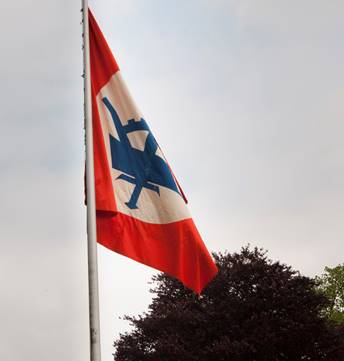
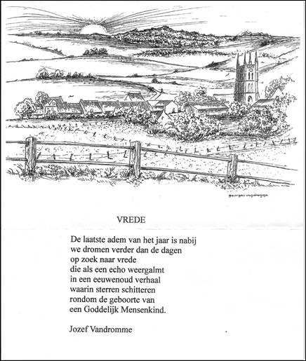

> nieuwsbrief > JAAR 2020- nr.1
Inhoud
Mededelingen: hernieuwen bijdrage 2020 Jaarboek 2020 Herdenkingen 2020
Op een nieuw
videokanaal hebben we een biografisch videoportret van Joris
van Severen aangemaakt. Zie: https://www.youtube.com/watch?v=pzjzR5orEnA&t

Kaftillustratie:
de vlag van het Verdinaso
Hernieuwen
ledenbijdrage voor 2020
De
jaarwisseling nadert met rasse schreden en meteen ook het
tijdstip voor het hernieuwen van de bijdragen voor 2020.
Dankzij een zuinig beheer blijft het ons mogelijk om,
niettegenstaande alweer gestegen druk- en portkosten, de
minimumbijdrage te behouden op 29 . In ruil daarvoor
verzekeren we u de stipte toezending van het nieuwe Jaarboek Joris van
Severen het 24e al in de meimaand en van de vier
nummers van ons kwartaalblad Nieuwsbrief Joris van
Severen. Vanaf het bedrag van 35 boeken we u met dank
als steunend lid. Vereffening graag via onze rekening IBAN:
BE71 0001 7058 1469 BIC: BPOTBEB1 t.n.v. Studiecentrum Joris
van Severen, Paddevijverstraat 2, 8900 Ieper.
Het
Jaarboek Joris van Severen 2020
Het
nieuwe jaarboek het 24e al zal traditiegetrouw
verschijnen in de loop van de maand mei
Herdenkingen
2020
De
herdenkingsplechtigheden voor Joris van Severen en zijn
lotgenoten zullen doorgaan in het weekeinde van 16-17 mei
2020.
Nog
is alles niet gezegd
Jaarboek Joris van Serveren 23 (2019)
Bijna
80 jaar na zijn gewelddadige dood in het Franse Abbeville
blijft de enigmatische historische persoonlijkheid die Joris
van Severen was het onderwerp van historisch onderzoek en
duidende beschouwingen. Met dat opzet bracht het
Studiecentrum Joris van Severen opnieuw voor het 23e jaar
op rij - een lezenswaardig jaarboek uit. Geen hagio-grafie
die tijd is lang voorbij sinds de dood van de laatste
Dinaso's -, maar gedegen werk van vorsers en interpretatoren
tillen dit en vorige jaarboeken ruim boven het gemiddelde
niveau van wat we in Vlaanderen in deze branche gewoon
zijn.
Geen collaborateur
Bijzondere
aandacht verdient zeker de bijdrage van Maurits Cailliau
waarin hij op basis van elf Duitse bronnen aantoont dat
Nazi-Duitsland niet erg scheutig was op samenwerking met het
Verdinaso omdat Van Severen zich niet focuste op een nieuw
door Duitsland gedomineerd Europa, maar wel op de
soevereiniteit en de eenheid van de Nederlanden, de latere
Benelux. Het werd hen snel duidelijk dat de politieke en
maatschappelijke standpunten van het Verdinaso, zeker vanaf de
nieuwe marsrichting', niet compatibel waren met wat zij
wilden in Europa. De contacten tussen Van Severen en Duitse
bezoekers van het regime op aanvraag van deze laatsten
verliepen steevast uiterst koel en zakelijk, en verveelden Van
Severen. Hij duldde dan ook geen enkele inmenging in de
Nederlanden. Deze bijdrage is aanbevolen lectuur voor hen die
de rechtsautoritaire Van Severen altijd weer en
gemakkelijkheid halve in de grote nationaalsocialistische
verzamelbak gooien. Zijn houding verklaart zeker ook waarom na
zijn dood een groot deel van zijn trouwe volgelingen niet in
de collaboratie stapten of zelfs in het verzet gingen. De
overigens aan het einde van het jaarboek in bijlage
toegevoegde Duits-kritische tekst (Duitsland en wij")
van Louis Gueuning uit 1942(!) getuigt hiervan, maar ook van
durf en lef om in volle oorlogstijd de eigen visie tegenover
die van het toen almachtige Duitse Rijk te plaatsen.
Benelux
Voor
het overige vinden we in het jaarboek nog een tekst van de
Noord-Nederlander Ruud Bruijns over Edmond Willem Pieter van
Dam van lsselt, die in het Noorden door het Verdinaso
geïnspireerd geraakte voor zijn actieve inzet voor de
vereniging van België, Nederland en Luxemburg en zijn na de
oorlog vanzelfsprekende inzet voor de Benelux.
Kristof
Papin beschrijft dan weer hoe de katholieke aristocraat
Charles van Renynghe, uitgever van het Franstalige leperse
weekblad Le Sud, evolueerde van Franstalige
conservatieve katholiek richting Verdinaso en niet naar Rex.
Voorts
is er ook een beschouwing van Nick Peeters over Leopold
Fevery, Dinaso-sympathisant en Flamingant, die ook in het
konvooi naar Abbeville belandde. Later zal blijken dat hij
reeds voor de oorlog contacten had gehad met de Duitse Abwehr,
de spionagedienst, wat uiteindelijk een geheel ander beeld gaf
van deze idealist.
Het
jaarboek is eens te meer uiterst verzorgd en fraai
geïllustreerd uitgegeven en verdient al alle voorgaande een
plaats in de betere ge-schiedschrijving over de complexe tijd
van het interbellum.
_________________
Jaarboek
Joris van Severen 23. Maurits
Cailliau (red.). Uitgaven van het Studiecentrum Joris van
Severen, 2019, 208 p. ISBN 9789076057224. 32 (verzending
inbegrepen).
Bron: t
Pallieterke, 19 september 2019.
De nationale volkshulde aan Willem van Oranje en het Verdinaso
Ruud
Bruijns
"Achteraf gezien kunnen we gerust
stellen dat het Verbond van Dietse Nationaalsolidaristen
(verder: Verdinaso) in Nederland nooit de omvang en de
invloed heeft gehad van de 'grotere broer' in België. Zelfs
in vergelijking met andere bewegingen, die streefden naar
een Nieuwe Orde is het Verdinaso in Nederland klein
gebleven. Dat wil overigens niet zeggen dat het Verdinaso
volledig werd genegeerd. In 1933 werd in Delft een nationale
Volkshulde aan Willem van Oranje (verder: Volkshulde)
georganiseerd naar aanleiding van de 400e geboortedag van
deze Vader des Vaderlands. Bij de huldeplechtigheden waren
enkele vroege en latere Dinaso's nauw betrokken. Bovendien
wil ik nader ingaan op het karakter van de Oranjehulde om te
laten zien dat bewegingen die streefden naar een Nieuwe Orde
omstreeks 1933 op veel begrip en instemming konden rekenen."
(101)"Het idee van volkseenheid was dus van toepassing op
het politieke vlak, maar eveneens op het staatkundige vlak,
namelijk de eenheid tussen Nederland en Vlaanderen. Willem
van Oranje werd opgevoerd als de edelman die de eenheid van
Noord- en Zuid-Nederland voorstond. Daarvoor werd door het
Diets Studenten Verbond niet alleen de opdracht gegeven aan
Paul de Mont om een toneelstuk te schrijven in die zin, maar
werd ook de Vlaamse priester Cyriel Verschaeve gevraagd om
een eed van trouw voor de Volkshulde op te stellen.
Verschaeve onderhield een warme vriendschap met Joris van
Severen en sympathiseerde op 11 juli 1933 - de Vlaamse
gedenkdag van de Gulden-sporenslag - openlijk met het
Verdinaso door een Dinaso-poster voor zijn deur te hangen.
De eed van trouw die Verschaeve opstelde luidde als volgt: Wij
heffen hart en handen Voor 't heil der Nederlanden En
zweren vast den eed: In doodsbeproefde trouwe Wilhelmus
van Nassouwe Met U te staan gereed".
Dinaso-sympathisanten waren op vele wijzen betrokken bij de
organisatie en drukten hun stempel op de Volkshulde, met
name Cyriel Verschaeve, die de eed van trouw opstelde. Zijn
propaganda voor het Verdinaso hinderde Wies Moens niet om
uitgenodigd te worden om te komen spreken. Uitgesproken
vertegenwoordigers van de Nieuwe Orde, zoals Anton Mussert,
professor Gerretson en generaal Snijders, waren present. De
Volkshulde aan Willem van Oranje was in veel opzichten een
verzuchting naar leiderschap van een natie in crisistijd. De
verkiezingen van mei 1933 besliste de strijd tussen de
verschillende personen die aanspraak maakten op het
leiderschap ten gunste van Hendrik Colijn, die Nederland tot
aan de oorlog zou leiden. Hij personifieerde in zekere zin
het gezag waar het volk om vroeg." (109)
___________________
Bron:
Jaarboek
Joris
van Severen, zijn persoon, zijn gedachten, zijn invloed,
zijn werk,
Ieper: Uitgave Studiecentrum Joris van Severen, nr. 13,
2009, pp. 101-110.
Gevonden op: collectie-delft.nl/?option=com_simple_archive&view=table&Itemid=134&result=details&id=4edeec94-f071-11e3-bcfd-17d7139e5f8c
Rik van Cauwelaert
De collaboratie
tijdens de Tweede Wereldoorlog is in Vlaanderen al langer
een breed onderzoeksterrein. Onder Vlaamse historici is de
schroom om hoofdrolspelers en organisaties uit de Vlaamse
collaboratie onder de lamp te zetten volledig verdwenen. Als
er al taboes bestonden, dan gingen die definitief overboord
met de grote televisiereeksen van Maurice de Wilde over de
Nieuwe Orde, uitgezonden in de loop van de jaren 1980 door
de toenmalige BRT.
In het
driemaandelijkse tijdschrift Wetenschappelijke
Tijdingen, uitgegeven door het Archief en
Documentatiecentrum voor het Vlaams-Nationalisme (ADVN),
debatteren historici ongeremd over de collaboratie en de
hoofdrolspelers in dat drama.
In Franstalig
België echter moet het equivalent van Bruno de Wevers
standaardwerk Greep
naar de macht, over het Vlaams-nationalisme en de
Nieuwe Orde, nog worden geschreven. Een omvangrijke
Franstalige biografie van Léon Degrelle ligt er nog steeds
niet. Degrelle en Rex worden nauwelijks vermeld in de anders
voortreffelijke encyclopedie van de Waalse beweging.
Eerder dit jaar
werd in de overlijdensberichten van de auteur Félicien
Marceau, pseudoniem voor Louis Carette, met veel ontzag
geschreven en gepraat over de tot Fransman genaturaliseerde
Belg die het tot lid van de Académie française bracht. Maar
het collaboratieverleden van de gewezen laureaat van de Prix
Goncourt bleef veelal onder de mat.
Om Dans la mêlee du XXe
siècle, de biografie van journalist, schrijver en
collaborateur Robert Poulet, gepubliceerd te krijgen, moest
de jonge historicus Jean-Marie Delaunois naar Vlaanderen
uitwijken, naar De Krijger in Erpe-Mere, een bescheiden
uitgeverij van militaria. Geen enkele Franstalige uitgeverij
wilde zich afgeven met een boek over Robert Poulet, zelfs
met een inleiding van de gerespecteerde historicus Jean
Vanwelkenhuyzen.
Het colloquium
rond De Becker vormt nochtans een Franstalige aanzet voor
wat Olivier Boehme jaren geleden al deed in zijn
baanbrekende maar jammer genoeg onderbelicht gebleven Revolutie van rechts en
intellectuelen in
Vlaanderen tijdens het interbellum. Daarin schetste
Boehme hoe de rechtse revoluties en stromingen uit
Frankrijk, Duitsland en Italië inwerkten op Vlaamse
intellectuelen als Victor Leemans en Hendrik de Man. In zijn
boek verwees Boehme meermaals naar de invloed van de
Katholieke Actie, waar Léon Degrelle en Rex wortel schoten,
maar ook naar de invloedrijke kanunnik Jacques Leclercq,
Leuvens hoogleraar ethiek, die een grote invloed had op de
Franstalige katholieke jeunesse dorée. Een van Leclercqs
bekendste discipelen was André Molitor, de latere
kabinetschef van koning Boudewijn. Een andere van zijn
ontdekkingen was Raymond de Becker.
De Becker, in
1912 geboren als zoon van een Schaarbeekse winkelier van
wijnen en likeuren, was een selfmade man, die via een baan
op het secretariaat van de Association catholique de la
jeunesse belge (ACJB) in de kringen rond Leclercq belandde.
Raymond de Becker was een dweper, die geen tegenstrijdigheid
schuwde. Nu eens nam hij antikatholieke standpunten in,
zocht inspiratie in de Russische revolutie, waarna hij na
een retraite in een Franse abdij door mystieke buien werd
overvallen. Zo kwam hij in contact met de Franse filosoof
Jacques Maritain, naderhand stamvader van de
christendemocratie. Aanvankelijk vond De Becker de
aanstormende Léon Degrelle een politieke blaaskaak, een
antipolitieke bluffer, maar hij belandde uiteindelijk in het
bestuur van diens Rex-partij.
In Brusselse
politieke kringen gold De Becker als een getalenteerd
publicist die geen geheim maakte van zijn homoseksualiteit -
al sprak hij zelf liever over zijn uranisme.
In het blad Le rouge et le noir
voerde hij woeste polemieken met Paul-Henri Spaak, die hij
dan weer terugvond in de salons van de Luikse uitgever
Edouard Didier en diens bloedmooie Lucienne Bauwens. De
Didiers, die zowel in Brussel als in Parijs hun salon
openstelden voor de politieke en literaire helden van de
dag, ontvingen de socialistische voormannen Hendrik de Man
en Paul-Henri Spaak naast extreemrechtse tenoren als Léon
Degrelle en Joris van Severen,
maar ook Franse auteurs van rechtse signatuur als Robert
Brasillach, een wilde bewonderaar van Adolf Hitler en van
Degrelle, Robert Bertrand de Jouvenel en Alfred Fabre-Luce.
De Duitse diplomaten Otto Abetz en Max Liebe en de Duitse
auteur Ernst Jünger gebruikten het salon van de Didiers om
politiek te netwerken.
Later zou
blijken dat Didier uitgeverij
Na het
uitbreken van de oorlog was het Max Liebe, die hij bij de
Didiers leerde kennen, die Raymond de Becker binnenloodste
bij de collaborerende krant Le Soir - de
zogenaamde 'gestolen Soir' (Le Soir volé) die
onder Duitse controle stond. Weinige tijd later werd hij
hoofdredacteur van Le
Soir en directeur van de uitgeverij
Hergé bleef tot
het bittere einde voor Le Soir werken.
Zelfs nadat zijn vriend en mentor De Becker ontslag had
genomen en in een open brief aan de redactie van de
collaboratiekrant had toegegeven: 'We hebben ons vergist.'
De Becker was
in conflict geraakt met de bezetter omdat hij met Rex had
gebroken nadat Degrelle was begonnen over de germanisering
van Wallonië en de definitieve aanhechting van België bij
het Germaanse rijk. De Beckers plan om een eigen partij op
te richten maakte zijn positie als hoofdredacteur van Le Soir onmogelijk.
Na de oorlog,
in 1946, kreeg Raymond de Becker de doodstraf. Wachtend op
zijn executie schreef hij een belangwekkend essay, La collaboration en
Belgique ou une révolution avortée. Volgens historicus
Bruno de Wever van de Universiteit Gent verdient dit essay
een kritische en geannoteerde heruitgave, omdat De Becker de
collaboratie in België op een correcte wijze belichtte en de
collaboratie niet trachtte te vergoelijken door die los te
koppelen, wat in Vlaanderen al eens gebeurt, van het
fascisme.
Uiteindelijk
werd De Becker niet terechtgesteld, maar uitgewezen. Na een
kort verblijf in Zwitserland vestigde hij zich in Frankrijk,
waar hij in 1969 overleed na een tweede carrière als
publicist. Al diende hij vaak een beroep te doen op
financiële steun van zijn succesrijke vriend Hergé om de
eindjes aan elkaar te kunnen knopen.
Uit de
verschillende uiteenzettingen tijdens het colloquium kwam
Raymond de Becker vooral naar voren als de man die niet kon
kiezen. En die, als hij dan al een keuze maakte, steeds
verkeerd gokte. Maar het was dan ook, schreef een van De
Beckers tijdgenoten, een woelige tijd waarin het moeilijk
was juist te denken.
_____________
Bron: Knack van 11 april
2012
Pierre
Nothomb werd in 1887 in België (provincie Luxemburg)
geboren. Hij studeerde rechten en werd advocaat.
Christendemocraat voor de Eerste Wereldoorlog, vocht hij aan
het begin van het conflict in de burgerwacht. Sinds 1915
actief in de Belgische regeringskringen in ballingschap in
Frankrijk, werd hij een van de propagandisten van het
Belgische nationalisme en voerde hij, aan het einde van de
oorlog campagne voor de realisatie, van een groter België
door de annexatie van Luxemburg, een deel van Nederland en
een deel van Duitsland. In de jaren 1920 was Pierre Nothomb,
bevriend met en volgeling van Benito Mussolini, en leidde
hij de Jeunesses nationales, die geconfronteerd werden met
fysiek geweld van socialisten, communisten en
Vlaams-nationalisten. Nadat hij samen met Léon Degrelle aan
het begin van het rexisme gestaan had, trad hij toe tot de
katholieke partij en werd hij in 1936 senator. Hij is de
auteur van vele boeken en was hij tot het jaar vóór zijn
dood in 1966 senator van de sociaalchristelijke partij.
Op het
einde van de jaren 1930 raakte Nothomb bevriend met Joris van Severen, door hun overeenstemmende ideeën m.b.t.
de nationale onafhankelijkheid en de dwingende neutraliteit
van het land. In september 1939 ondertekenden Nothomb en Van
Severen het manifest van de door hen beiden geïnspireerde Ligue
de l'Indépendance, die neutraliteit aan een
autoritaire staatsinrichting wilde koppelen. Toen Van
Severen bij het begin van de Tweede Wereldoorlog als
staatsgevaarlijk
opgepakt werd en naar Frankrijk werd
gevoerd, probeerde Nothomb de Verdinaso-leider
tevergeefs
vrij te krijgen.
In de
Jaarboeken Joris van Severen kwam Pierre Nothomb al
vaker aan bod en ook weer in het jaarboek 2020.
Het
boek van Lionel Baland breng thans een gebalde biografie van
Nothombs leven en streven, met aandacht voor alle levensfases.
Het boek sluit af met een chronologisch levensoverzicht, een
opgave van het uitgebreide bronnenmateriaal, een overzicht van
Nothombs vele publicaties en een reeks citaten uit diens
werken.
___________________________
N.a.v.:
Lionel Baland, Pierre
Nothomb, reeks Qui suis-je?,
Uitg. Pardès, gen.,
ill, 128, Prijs 12 , p., ISBN 978-2-86714-538-4. Ook te
verkrijgen bij de auteur: rue Wazon 101, 4000 Liège.
Over De kinderen van het Verzet
Open brief aan Koen Aerts
Geachte
Professor,
de
reeks Kinderen van het verzet, als tegenhanger van de
Kinderen van de collaboratie, is nog maar in haar
beginstadium en daarom is het te vroeg om er al een oordeel
over te vellen. Maar het is waar: in de middens van de Vlaamse
beweging werd en wordt veel meer begrip getoond voor de
collaboratie dan voor het verzet, waarover weinig of niets
bekend is. Hopelijk vult deze reeks deze lacune ietwat aan.
Het verzet is inderdaad onbekend, zeker bij de jongere
generatie. Meer zelfs: in bepaalde middens wordt het verzet
afgeschilderd als de daden van een bende criminelen.
Als
één van de weinig nog levenden, die dit alles als puber heeft
meegemaakt, stel ik mij echter de vraag of die slechte
reputatie van het verzet, niet door het verzet zelf over zich
afgeroepen werd.
Het
verzet, met alle eerbied voor diegenen die er het leven bij
inschoten, had dadelijk na de bevrijding zichzelf moeten
opdoeken met als motief: onze taak is volbracht, het land is
nu bevrijd van die vreemde bezetter. Of in het beste geval was
het de taak van het verzet geweest om de politie en rijkswacht
bij te springen om de orde in het land te handhaven en
plunderingen en chaos te voorkomen. Het was niet zijn taak om
collaborateurs aan te houden en op te sluiten. Dat was de taak
van het gerecht. En in bepaalde gevallen - ik ken er - hebben
weerstanders zelf aan die wanordelijkheden meegeholpen. Ik zie
nog het beeld voor mijn ogen van die hoogzwangere (zwarte)
vrouw die door verzetsmensen (?) opgeleid werd met een
geweer mét bajonet in haar rug. Uiteraard zal men daarop
antwoorden: ja maar, dat waren weerstanders, verzetsmensen die
pas NA de bevrijding zijn opgedoken en die op die wijze soms
banale burenruzies uitvochten. Dat zal wel waar zijn. Maar men
mag van de gewone man niet verwachten dat hij tussen échte
verzetsmensen en verzetsmensen die pas opdoken als alle gevaar
geweken was, een onderscheid maakt. Bij mijn weten werd door
het échte verzet trouwens nooit daarvan afstand genomen.
Hopelijk komt ook dit aspect in de reeks duidelijk tot uiting.
Hoogachtend,
Vik Eggermont
Geachte
heer Eggermont,
Spreek
me gerust aan met Koen. Veel dank voor uw interessant bericht.
In de zesde aflevering, die we nu nog aan het monteren zijn,
zal er door experten nader worden ingegaan op uw opmerkingen.
De kanttekeningen zijn me zeker bekend, maar binnen het format
van de reeks krijgen we niet altijd de gelegenheid en ruimte
om er breedvoerig op in te gaan. Het spreekt ook dat er nog
steeds belangrijk onderzoek dient verricht te worden om
bepaalde zaken beter te kunnen analyseren en evalueren. Daar
wordt momenteel aan gewerkt door enkele doctoraats-studentes.
Alle
goeds en veel dank,
Koen Aerts

In de eerste jaargangen
van deze Nieuwsbrief hebben we menige aflevering gebracht
van de memoires van Fons van Opstal omtrent zijn
Dinaso-militieverleden. Die epische verhalen zijn ondertussen
ook al doorgedrongen in de literatuur. Getuige daarvan de
vuistdikke roman Ten wuesten van Wezel De Eeuw van mijn
Moeder van Hendrikus Hardewyker.1 In wat volgt brengen we
een uitgebreid fragment uit deze roman waarvan de
verhaallijnlijnen de gehele geschiedenis van de 20e eeuw op
een meesterlijke wijze en met een Heel-Nederlandse insteek
overspannen.
Insiders zullen in de Staf
uit het verhaal moeiteloos de Dinaso-militant Staf van de Aa
herkennen aan wie de auteur zn relaas te danken had. Het is
een geromanceerd relaas, dat evenwel teruggaat op een
werkelijk treffen tussen de militanten van de Anti-oorlogsliga
2 en het
VNV, waarbij de militanten van het Verdinaso beslissend
ingrepen. Volgens de biograaf van Kamiel Huymans valt dit
treffen te dateren op 4 oktober 1935.3
Maurits Cailliau
De Dinaso Militanten Orde in de literatuur (2)
Op de Teniersplaats werden de wonden gelikt;
alle partijen hadden averij opgelopen, veelal kneuzingen, builen
en slagwonden, maar mogelijk ook enkele breuken van armen of
benen. De Dinasos hielpen de gewonden, brachten ze naar de
fontein, waar ze desnoods neergelegd werden op de stenen bank
die de boord van de waterpartij vormde, in afwachting dat
deskundige hulp zou arriveren. Markus zag hoe een peloton
militanten op de rijbanen links en rechts en op het plein de
wanordelijke troep begon op te ruimen. Twee mannen begonnen
aanwijzingen te geven aan de chauffeurs van de autos, die
vooraan gestrand waren, bij het uitbreken van de rellen. Met
stijgende verbazing zag Markus dat ze schijnbaar op eigen houtje
allerlei maatregelen namen die eigenlijk aan de politie
toekwamen, zodat het verkeer weer mogelijk zou worden op het
kruispunt.
De politie had zich inmiddels gehergroepeerd
op de De Keijserlei en kwam nu terug aangemarcheerd, op alles
voorbereid. In gesloten formatie bereikten ze de Teniersplaats,
waar net het verkeer weer op gang begon te komen. Maar aan de
andere zijde van het kruispunt, aan de kant van de Leysstraat,
verscheen terzelfdertijd een lange kolonne
donkergroen-geüniformeerde mannen, die met vlag en trommelaars
voorop, de Teniersplaats opmarcheerde. Het Dinaso-peloton Kassel stelde zich op
in slagorde, oog in oog met het politiecordon.
De officier van de stedelijke politie zag het
gebeuren, keek terzijde naar zijn adjudant en koos voor de
veiligste oplossing. Dit is geen opdracht meer voor ons! zei
hij futloos en zenuwachtig, we doen een beroep op de
Rijkswacht. De adjudant knikte opgelucht, met een blik op de
donkergroene muur dertig meter verder, en haastte zich met de
agenten rechtsomkeer te laten maken.
De politie marcheerde af in kolonne, richting
Centraal-Station. Op de Teniersplaats was de rust weergekeerd,
de relschoppers waren verjaagd, de politie was afgedropen. De
Dinaso-militie bleef meester van het terrein.
Toen de schermutselingen op de Teniersplaats
uitdoofden en de resterende rooie ratten zowel als de
zwarthemden ijlings de benen namen, veegde Staf van der Mark het
zweet van zijn voorhoofd en hing zijn wapenstok aan zijn
koppelriem. Hij keek om zich heen en zag op de stenen bank naast
de fontein, tussen de gewonden en de gekneusden, ook enkele
Dinaso-kameraden zitten en liggen. Eén van hen zag er weliswaar
nog gaaf uit, maar was in de hitte van het gevecht zo zwaar
tegen de grond gekwakt dat een knie bij de val blijkbaar ernstig
letsel opgelopen had. De man kon niet meer staan noch lopen.
Kom zei Staf tegen zijn strijdmakker,
terwijl hij zijn arm aanbood, steun maar op mij en we gaan naar
de Malpertuus, daar zullen ze wel verzorgers oproepen die raad
weten met die knie.
Staf trok de hulpeloze strijder recht, sloeg
diens arm over zijn schouder en op deze wijze ondersteunend
bracht hij het strompelende slachtoffer, dat af en toe een
lichte kreet van pijn slaakte, naar het zogenaamde Vlaams Huis,
waar ze een paar trapjes op sukkelden. In de hal las Staf in een
flits het gele bord met de zwarte gotische sierletters dat de
bezoeker Welkom in het huis van Reinaert, heette. Ze geraakten
in de gelagzaal, waar Staf zijn patiënt zuchtend op een stoel
liet neerzijgen. Toen leek het wel of in de Malpertuus de hel
losbarstte.
Met een oorverdovende slag vloog het grote
raam aan de voorzijde van het café aan diggelen, zodat de
scherven tot voor de toonbank, achter in de gelagzaal vlogen.
Een zware ijzeren bloembak was van op het terras met grote
kracht doorheen het voorraam gegooid. Het volgende ogenblik
stormde een reusachtige kerel naar binnen, gevolgd door wel zes,
neen door wel tien mannen die onmiddellijk amok maakten door
alles wat binnen hun bereik kwam omver te gooien, kapot te slaan
of anderszins te vernielen.
Het was een groep dokwerkers, razend door hun
nederlaag en smadelijke aftocht op straat, die wraak wilden
nemen door het gehate lokaal van de vijand kort en klein te
slaan. De reus stormde dwars door het café tot bij de toonbank,
waar een totaal verraste kastelein ijlings dekking zocht achter
zijn bierpomp, en zich tegelijk bukte om een losse tafelpoot te
grijpen, die daar blijkbaar met het oog op zulke evenementen bij
de hand gehouden werd.
Maar de reus schonk voorlopig geen aandacht
aan hem. Hij greep het grote plaasteren Reinaertbeeld, in de
vorm van een behoedzaam sluipende vos, dat ter verfraaiing
frontaal op de toonbank prijkte, vast en tilde het alsof het een
veertje was boven zijn hoofd om het met donderend geraas en
gerinkel dwars door het achterraam op het koertje te flikkeren.
De kastelein kwam met tafelpoot achter de toonbank vandaan en
stelde zich teweer tegen twee woeste aanvallers; een kelner kwam
uit de keuken rennen en greep een stoel, hield hem eerst als een schild
voor zich uit, om er dan uit alle macht mee op de aanvaller los
te slaan. Maar hij en de kastelein konden niet beletten dat weer
andere indringers de grote kast met bierglazen en borden, die
bijna tot aan de zoldering reikte, van de muur rukten en
vierkant omver gooiden zodat de scherven tot ver in alle
richtingen vlogen. In dit helse tumult waren de binnen gebrachte
gewonde en zwaar gekneusde Dinaso-militanten en VNVers
natuurlijk totaal weerloos. Hun bleef weinig anders over dan
zich met hun pijnlijke knoken en blessures moeizaam onder de
tafels te laten zakken, voor zover die tenminste nog recht
stonden. Maar Staf, die als een van de weinigen nog gezond en
wel was, had onmiddellijk terug zijn wapenstok gegrepen en keek
nu even onderzoekend rond zich heen om zich van een betere
vechtpositie te verzekeren. In een oogwenk zag hij dat hij de
kastelein en de kelner best rugdekking kon bieden, zodat ze zich
rug aan rug konden teweerstellen tegen de losgebroken
dokwerkersfurie. Maar nog voor dat hij zijn doel bereikte, kreeg
hij een doffe klap schuin tegen zijn voorhoofd en voelde hij een
stekende pijn in zijn slaap. Staf zag alles eerst zwart worden
voor zijn ogen en daarna alles bloedrood. Hij greep naar zijn
slaap hij bloedde als een rund. Een dokwerker had van op
meters afstand, uit alle macht zijdelings een houten krukje naar
hem geworpen. Een scherpe rand van het gedrongen, zware
meubelstukje had naast zijn wenkbrauw een diepe snede
veroorzaakt, waaruit het bloed gutste. Staf drukte met zijn hand
de wonde dicht, maar hij zag voor zijn ogen alles draaien en was
virtueel buiten gevecht. Wankelend liet hij zich zakken op een
stoel, die toevallig nog recht stond, maar kreeg onmiddellijk
van zijn aanvaller een zware trap tegen zijn ribbenkas zodat hij
een meter verder languit onder een tafel terecht kwam. Hij bleef
liggen, sloot zijn ogen en bewoog niet meer.
Toen ook de kastelein en de kelner tegen de
grond lagen, kalmeerde de knokploeg enigszins. Wegwezen!
commandeerde de reus, voor ze ons hier insluiten. Met nog een
trap links en rechts tegen wat schots en scheve stoelen en
tafels, alsof ze de puntjes op de is wilden zetten, verdwenen
de dokwerkers de straat op. Net bijtijds, want enkele minuten
later betraden zes Dinasos het slagveld en bekommerden zich om
de overlevenden.
Dat viel eigenlijk nog mee, want geen van de
Dinasos of de VNVers, noch van de mensen van het café, waren
in acuut gevaar en ze konden voor passende verzorging gewoon
achtergelaten worden.
Maar dat zag Staf, wiens kwetsuur nog maar
lichtjes bloedde en die zich al een stuk beter voelde, niet
zitten. Niks van, zei hij categoriek tot zijn kompanen , ik
ga met jullie mee!. Maar die snee moet genaaid worden wierp
zijn makker op, anders hou je daar een litteken over van
jewelste. ]e hebt dringend een dokter nodig. Dat weet ik ook
wel reageerde Staf balsturig, voorzichtig met zijn wijsvinger
aan de zwaar beschadigde plek voelend, daar ga ik dan ook
direct naartoe. Maar hier blijven doe ik niet. Help mij liever
even met verbinden. Hij haalde zelf zijn zakmes boven en sneed
een lange repel stof van een tafelkleedje, om rond zijn
voorhoofd te binden. Zijn verzorger kreeg er schik in, en toen
Staf zo goed en zo kwaad mogelijk geholpen was, zette de man bij
wijze van orgelpunt voorzichtig zijn kepi op Staf zijn hoofd, om
het geïmproviseerde verband beter op zijn plaats te houden. En
toen gingen ze waarachtig ook nog grijnslachen tegen elkaar.
Vijfminuten later marcheerde de bijna voltallige Dinaso-militie
in twee kolonnes noordwaarts, de Italiëlei op. Staf liep met
zijn omzwachtelde hoofd en zijn bebloede overhemd mee in het
gelid alsof er niets aan de hand was.
Markus zag ze vertrekken en direct achter de
schouwburg van de lei afbuigen, de ene kolonne links de Korte
Winkelstraat in, de andere rechts achter het atheneum door de
Violierstraat. Eindelijk kon hij zijn wagentje weer opstarten en
terug naar zijn garage rijden, waar ze zich al zouden afvragen
waar hij in is hemelsnaam bleef. (
)
-------------------------------------------------------
Noten
1 Hendrikus
Hardewyker, Ten
wuesten van Wezel De Eeuw van mijn Moeder, gen., 967
pp., citaat pp.274-280. - Lecturium Uitgeverij, Zoetermeer,
2017. Joris van Severen en/of het Verdinaso treden in dit werk
vaker op. O.m. op de paginas136-138-267 e.v.-309-404 e.v.- en
496.
2 Ruud Bruijns, Liever revolte dan
oorlog. De internationale Socialistische Anti-Oorlogsliga
(1931-1939), Uitg. Vrijdag, 2018, p. 150, waar we
lezen:.
(
) De gewelddadige
reputatie van de Liga bleef nog lang nagalmen, ook in de
geschiedschrijving. Een goed voorbeeld is een confrontatie in
oktober 1935 in Antwerpen die door Jan Hunin wordt opgevoerd
als een gevecht tussen het VNV (samen met het Verdinaso) en de
Liga. Uit de beschikbare bronnen valt de rol van Liga echter
niet op te maken. Zo maakten het Verdinaso en de Liga er geen
woorden aan vuil in hun weekbladen. Dat was opmerkelijk, want
het Verdinaso klaagde in deze periode namelijk wel steen en
been over een nieuwe antifascistische knokploeg in Antwerpen
onder aanvoering van de voormalige Liga-voorman Maurits
Naessens, de Socialistische Voorwacht.
3 Hunin Jan, Het enfant terrible
Camille Huysmans, 1871-1968, Amsterdam 1999, p. 314.
Deze auteur vermeldt ene Adolf Pieters als aanvoerder van de
antifascistische stoottroep.
4 Historisch niet
correct: in de jaren van het interbellum droegen de
VNV-militanten geen zwarte hemden, wel grijze, als leden
van de Grijze- of Werf- Brigade